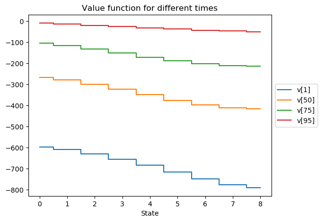

ECSE 506: Stochastic Control and Decision Theory
Aditya Mahajan
Winter 2020
About | Lectures | Notes | Coursework
Assignment 3 (solution)
Problem 1
The code for computing the optimal policy is available here. The code is written for ease of reading, not efficiency.
# State spaces
n, m = 8, 3
X = 1:n+1
U = 1:m+1
# Transition probability
q = 0.6
p = [0.0,0.25,0.5,0.8]
P = [ zeros(n+1,n+1) for u in U ]
# We are using 1-indexed arrays, so need to be careful with the indices
for u in U
@views Pu = P[u]
for x in X
if x == 1
Pu[x,x] = 1 - q
Pu[x,x+1] = q
elseif x == n+1
Pu[x,x-1] = (1-q)*p[u]
Pu[x,x ] = 1 - (1-q)*p[u]
else
Pu[x,x-1] = (1-q)*p[u]
Pu[x,x ] = (1-q)*(1-p[u]) + q*p[u]
Pu[x,x+1] = q*(1-p[u])
end
end
end
P_concat = vcat(P...)
# Costs
R = 6
h = 1
c = [0, 1, 4, 12]
r = zeros(n+1,m+1)
for u in U, x in X
if x == 1
r[x,u] = -c[u]
else
r[x,u] = p[u]*R - h*x - c[u]
end
end
# Dynamic programming
T = 100
v = [ zeros(n+1) for t in 1:T+1]
g = [ zeros(Int, n+1) for t in 1:T]
for t in T:-1:1
Q = r + reshape(P_concat * v[t+1], n+1, m+1)
for x in X
idx = argmax(Q[x,:])
v[t][x] = Q[x, idx]
g[t][x] = idx - 1 # To revert back to natural indices
end
end
using PyPlot
step(0:n, hcat(v[1], v[50], v[75], v[95]), where=:mid)
legend(["v[1]", "v[50]", "v[75]", "v[95]"], loc="center left", bbox_to_anchor=(1,0.5))
xlabel("State")
title("Value function for different times")
savefig("queueing.png", bbox_inches=:tight)
@info "Optimal policy" [g[1], g[50], g[75], g[95]]
The value functions are shown below.

The optimal policy at the corresponding times is:
┌ Info: Optimal policy
│ [g[1], g[50], g[75], g[95]] =
│ 4-element Array{Array{Int64,1},1}:
│ [0, 2, 3, 3, 3, 3, 3, 2, 1]
│ [0, 2, 3, 3, 3, 3, 2, 2, 1]
│ [0, 2, 2, 2, 2, 2, 2, 1, 1]
└ [0, 1, 1, 1, 1, 1, 1, 1, 1]Problem 2
The code for computing the optimal policy is available here. Note that we save a lot of explicit calculations by comuting the probability of landing in a bin in terms of differences of CDFs rather than an integral of the PDF.
using Distributions
using PyPlot
const T = 4
const λ = 1
# We first truncate the state space to [-B, B] and then discretize it into
# 2N + 1 points.
const N = 500
const B = 5
const X = range(-B, B, length=2N+1)
# Next we create the voronoi boundaries of these grid points.
# Note that there are 2N+1 grid points, so there will be 2N+2 boundaries.
# We follow the convention that the lower boundary of grid point n indexed by
# n and the upper boundary is indexed by n+1
boundary = zeros(2N+2)
boundary[1] = -Inf
boundary[2N+2] = Inf
for n = 2:2N+1
boundary[n] = (X[n-1]+X[n])/2
end
# The action space is binary. 0 means don't transmit and 1 means transmit
const U0 = 1
const U1 = 2
const U = [U0, U1]
# Now, we discretize the probability distribution. For every grid point x[i],
# we calculate the probability that the transition takes us to the interval
# (boundary[j], boundary[j+1])
const W = Normal(0, 1)
P = [zeros(2N+1, 2N+1) for u in U]
for i in 1:2N+1, j in 1:2N+1
P[U0][i,j] = cdf(W, boundary[j+1] - X[i]) - cdf(W, boundary[j] - X[i])
P[U1][i,j] = (cdf(W, boundary[j+1]) - cdf(W, boundary[j]))
end
# Per-step cost cost (note that action is stored as as u+1. So we subtract one)
cost(x,u) = λ*(u-1) + (1 - (u-1))*x*x
C = zeros(2N+1, length(U))
for u in U, n in 1:2N+1
C[n,u] = cost(X[n], u)
end
Q = [ C for t in 1:T ]
V = [ zeros(2N+1) for t in 1:T ]
g = [ zeros(Int, 2N+1) for t in 1:T ]
function find_optimal(t)
for n in 1:2N+1
idx = Q[t][n,U0] <= Q[t][n,U1] ? U0 : U1
g[t][n] = idx - 1
V[t][n] = Q[t][n,idx]
end
end
find_optimal(T)
for t in T-1:-1:1
for u in U, n in 1:2N+1
for m in 1:2N+1
Q[t][n,u] += P[u][n,m]*V[t+1][m]
end
end
find_optimal(t)
end
plot(X, hcat(V[1], V[2], V[3], V[4]))
legend(["V[1]", "V[2]", "V[3]", "V[4]"], loc="center left", bbox_to_anchor=(1,0.5))
xlabel("State")
title("Value function for different times")
savefig("iot.png", bbox_inches=:tight)
The value functions are shown below:

This entry was last updated on 06 Feb 2020